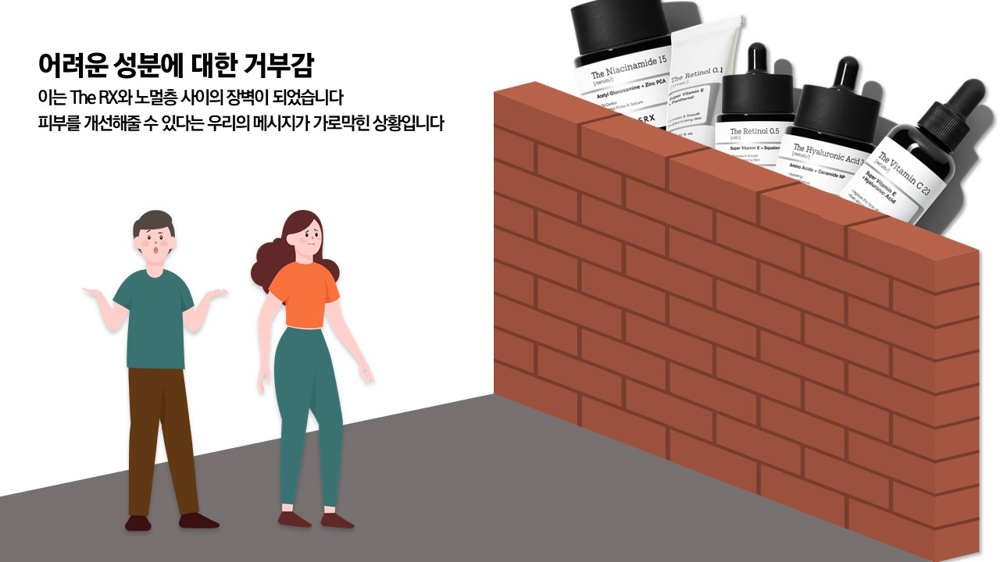
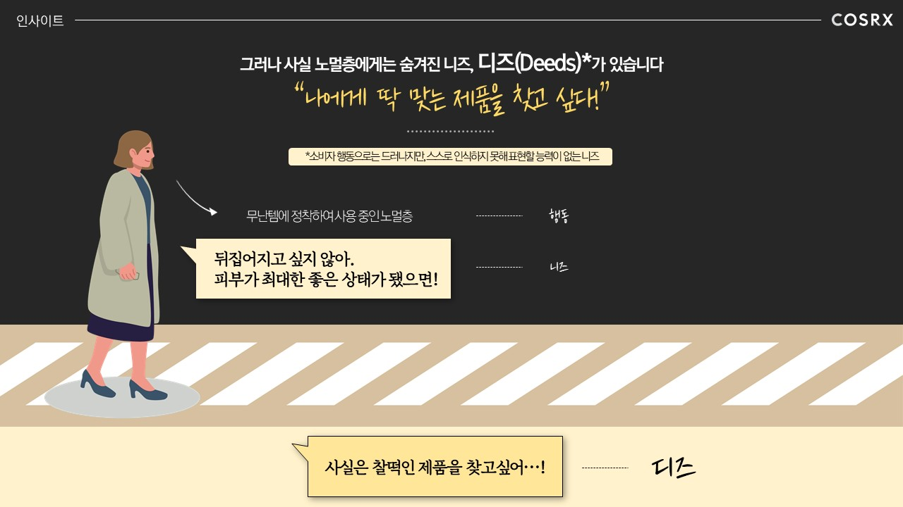
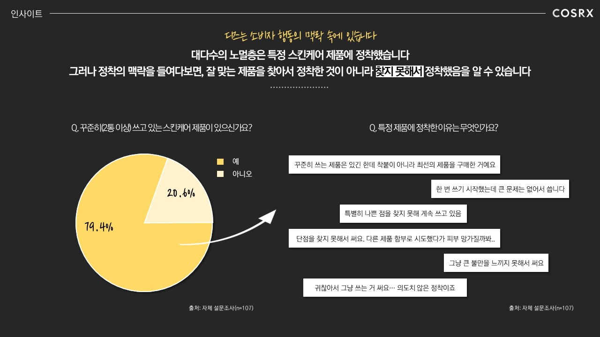
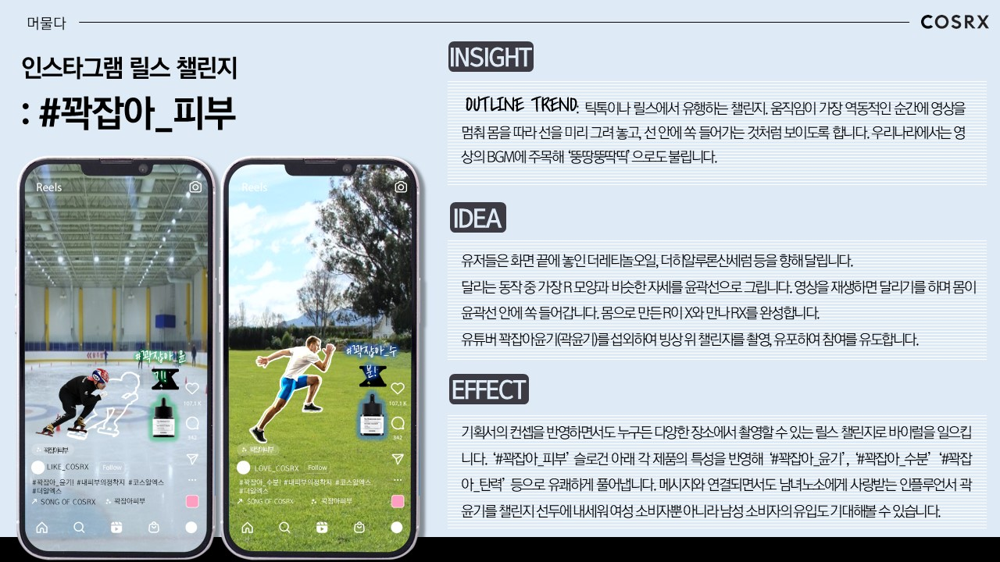

COSRX 경쟁PT 우수상 🏆
타깃층의 숨겨진 니즈를 찾아내 제품 USP와 연결하다





업무 요약
더마 코스메틱 브랜드 COSRX에서 퍼드 카테고리에 집중되어있는 비즈니스를 자사 신규 라인인 THE RX로 올릴 수 있는 전략을 제안
업무 내용 · 전략
[역할]
팀장으로서 기획을 주도, 대부분의 디자인을 담당
[전략]
더마 코스매틱 시장에서 인지도가 미미한 제품의 성공적인 바이럴을 위해선 2030 소비자에 대한 심층 분석을 통해 숨겨진 니즈를 파악하여 제품의 USP와 연결짓는 것이 중요함을 강조
설문조사를 통해 타깃은 특정 제품에 이미 정착한 상황이지만 사실 이에 불만족하여 잘 맞는 제품에 대한 니즈를 갖고 있었음을 파악
이 니즈를 해당 제품이 충족시킬 수 있음을 드러냄
성과 · 결과
"기획서의 흐름이 매우 논리적이며 탁월했다. 실제로 실행해보고 싶은 IMC가 많아 좋았다."
→ 우수상 수상